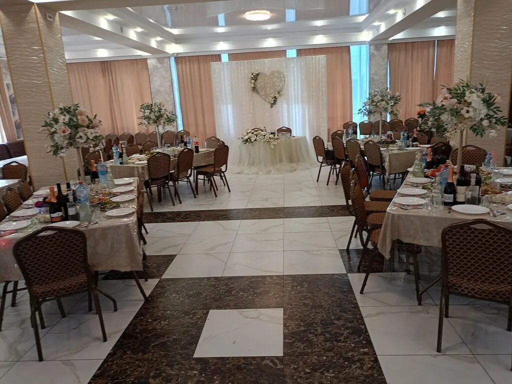
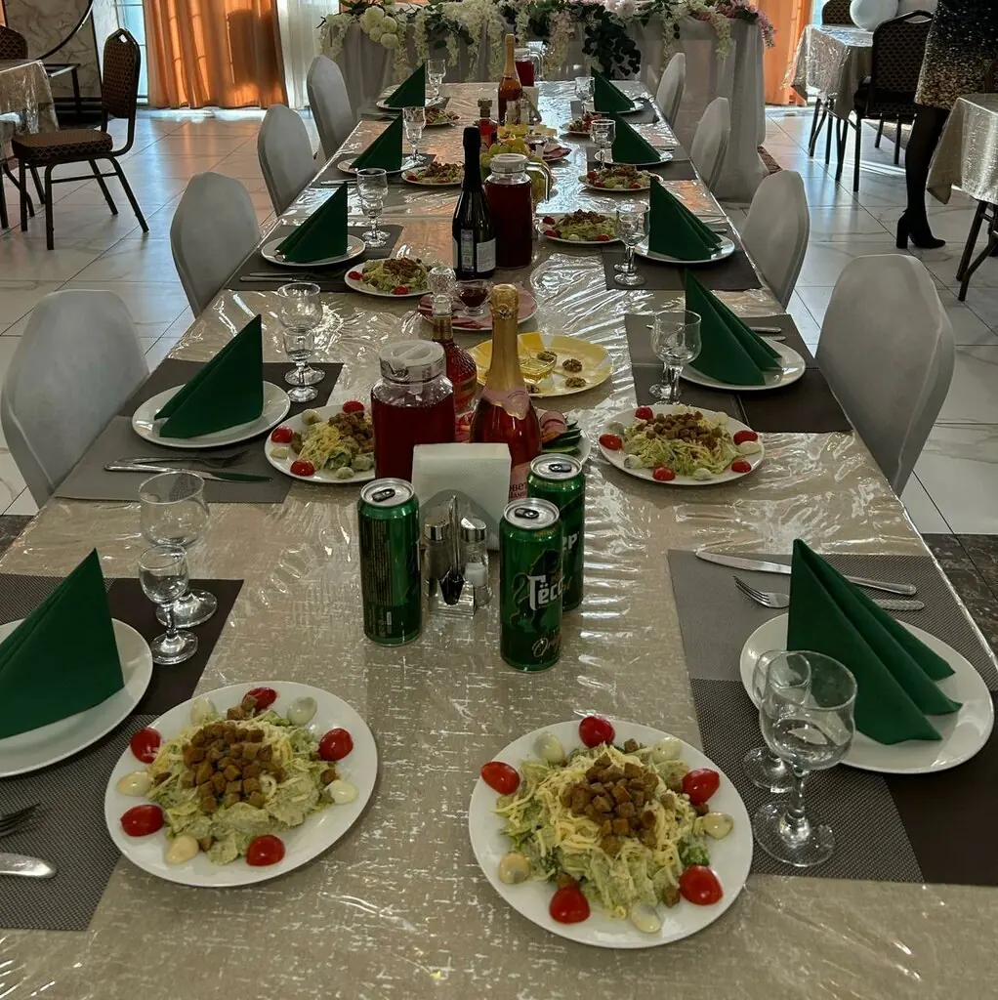
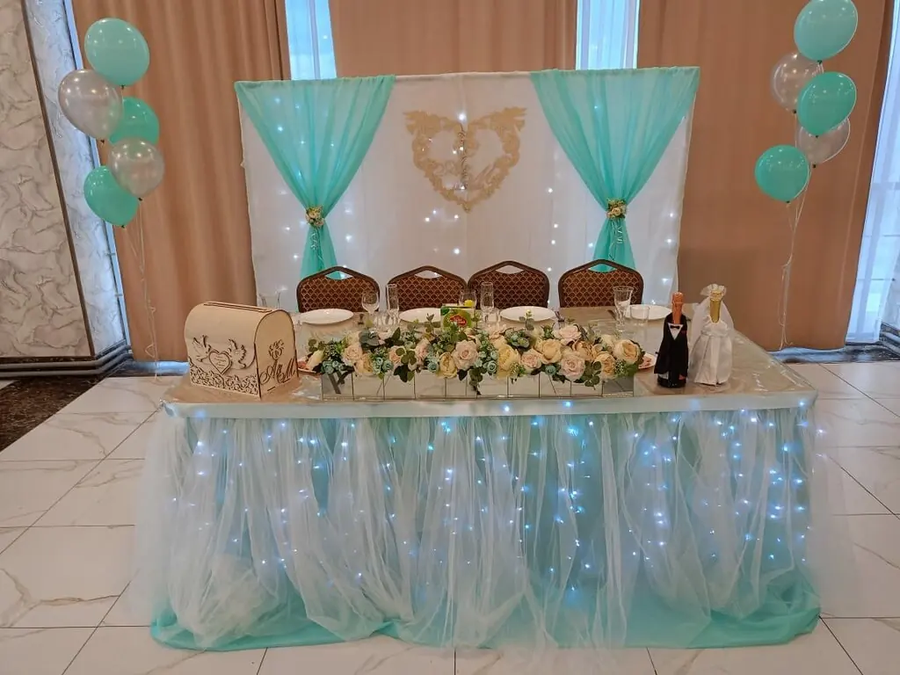
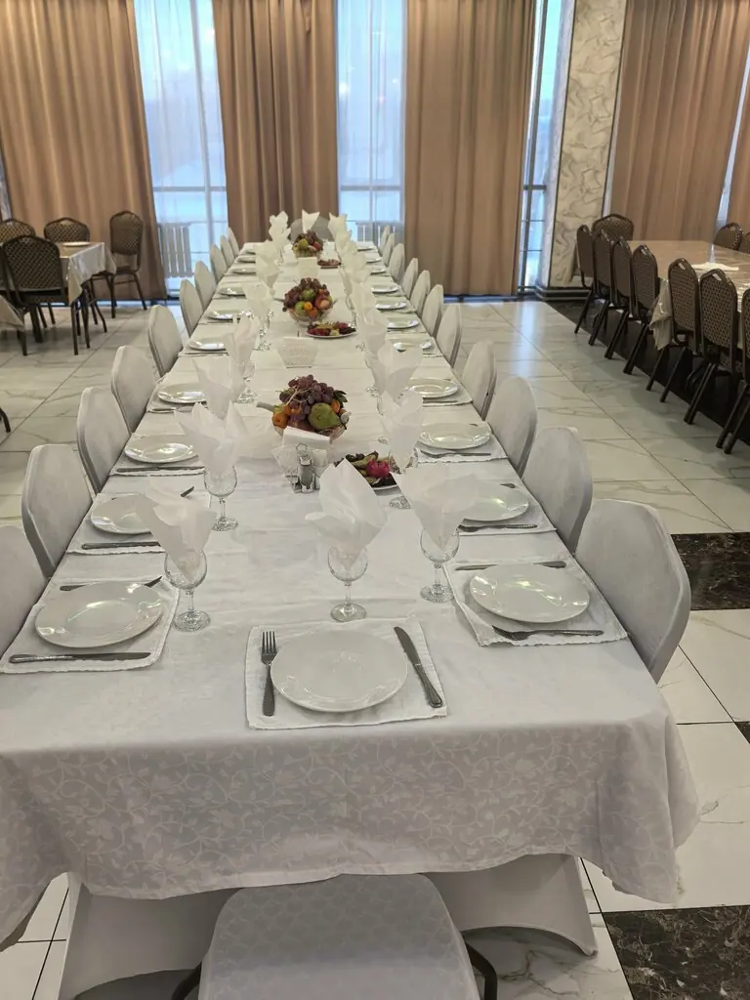

Кемерово+7 996 413-81-06
Ширван
Прокрутите, и шампур поедет. Шашлык из баранины, люля, плов и банкеты, где хозяин сам подскажет, как лучше накрыть стол.
4,3 · 242 оценки · халяль
С огня
То, о чём чаще всего пишут гости.
Шашлык из бараниныЛюля-кебабБугламаПловМантыСалат Цезарь
Блюда из отзывов и карточки ресторана. Полное меню с ценами добавим из вашего прайса.

Банкет
Большой зал с шахматным полом, танцпол и длинные столы для свадьбы или дня рождения. Сколько гостей поместится, подскажет хозяин.



Гости сказали
Шашлык из баранины и люля, лучше в городе не найти. Мясо всегда свежее.Анар Гуламов
Проводили банкет, организация и качество блюд на высоком уровне. Хозяин ресторана Мариф подсказал по меню, как лучше организовать стол.Андрей Фоменко
Шикарный ресторан, кормят очень вкусно, персонал вежливый, всё чисто и аккуратно.лика попова
Угли готовы
Кемерово, 2-я Камышинская улица, 38Вт–пт 10:00–02:00, сб–вс 10:00–07:00, пн выходной+7 996 413-81-06